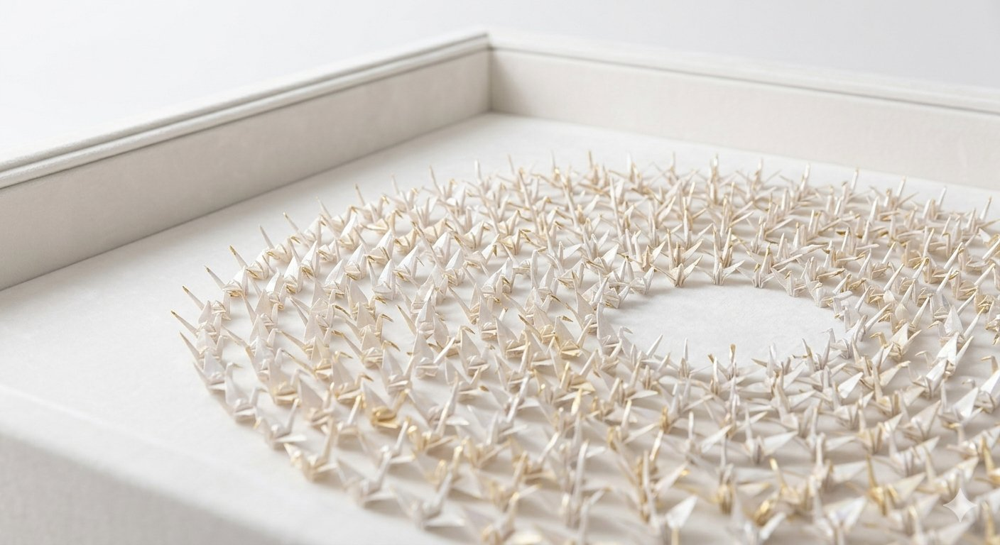

A Ritual of Care, Prayer & Remembrance
The 1000 Crane Project
Each naræ Fellow folds three origami cranes by hand: one for herself, one for another woman, and one for the community. Over time, these cranes become a growing expression of care, witness, and shared hope.

Each crane is folded by hand and held with intention — becoming part of a growing collective display of memory, belonging, and witness.
A living ritual
Three cranes, one act of care
Within the naræ retreat, each Fellow is invited to fold three origami cranes by hand. It is a calm act — unhurried, requiring only patience, presence, and intention. Sometimes it happens in silence. Sometimes with tears, reflection, or conversation. However it unfolds, each crane carries the presence of the moment in which it was made.
Each crane moves in a different direction: inward toward herself, outward toward another woman, and forward toward the community they are building together.
Every crane is kept
A record held with care
naræ keeps the collective cranes as a visible record of the women who have moved through this community — their journeys, their regard for others, and their presence here.
When one thousand have been gathered, they will be honored in ceremony. And then the folding continues.
One for herself
Folded in acknowledgment of her own journey — her strength, her survival, and the life she continues to shape fold by fold.
One for another
Folded in the spirit of another woman — someone she knows, someone she hopes for, or someone she has never met but still holds in her heart.
One for naræ
Folded for the foundation and the community it holds — a small offering that becomes part of something shared and lasting.
Why one thousand
1,000 is not a finish line. It is a prayer.
In Japanese tradition, folding a thousand cranes is an act of prayer, devotion, and deep wishing. At naræ, reaching one thousand is a collective act of witness — honoring the women who folded them, the women they thought of, and the mission they joined.
It is not the end. It is a moment of reflection and continuation.
The ceremony
A gathering of reflection and remembrance
When the collection reaches one thousand, naræ will hold a ceremony to honor the display and what it carries — making visible what has been tended over time.
How it reflects naræ
Built gradually, with intention
Meaningful support is rarely created all at once. It grows through repeated acts of presence, trust, and human connection — the same way a crane is made, fold by fold. This project grows through the hands and stories of naræ Fellows and those directly connected to the retreat. It is not simply a display. It is a communal archive of witness.
A crane is made fold by fold. So is a life rebuilt. So is this foundation.
"Some acts are small enough to hold in the hand, yet large enough to carry memory and hope forward."naræ guiding spirit